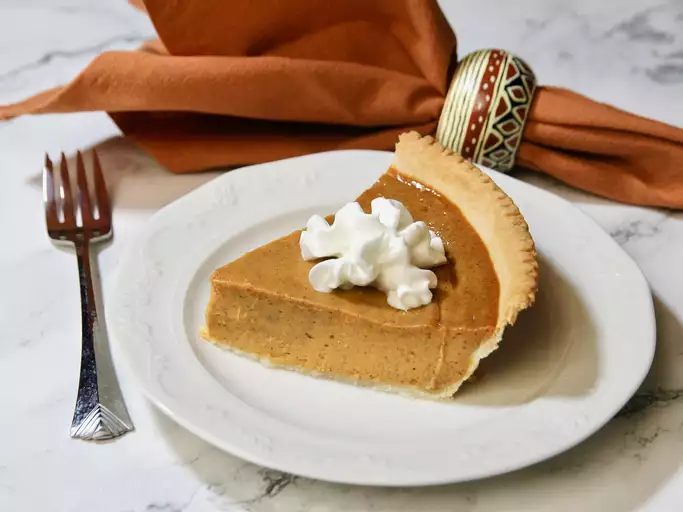

Pumpiking Pie

Description
The one and only pumpkin pie! Make this traditional dessert the perfect
ending to a Thanksgiving feast. Garnish as desired. Refrigerate leftovers.
Igredients
- 1 (15 ounce) can pumpkin puree
- 2 large eggs
- 1 teaspoon ground cinnamon
- ½ teaspoon ground ginger
- ½ teaspoon ground nutmeg
- ½ teaspoon salt
- 1 (9 inch) unbaked pie crust
Steps
-
Mix: Well, technically you'll first need to preheat the oven. Then you
can start by mixing all the ingredients for your filling: pumpkin puree,
sweetened condensed milk, eggs, cinnamon, ginger, nutmeg, and salt.
Whisk it all together until smooth.
-
Bake: Pour the mixture into your pie crust (store-bought or homemade is
fine). Bake in the preheated oven.
-
Reduce heat and bake some more: Now you'll reduce the heat and continue
to bake. This helps the pie to cook evenly without cracking. Once a
knife inserted 1 inch from the crust comes out clean, then it's ready.
The center should be just a little jiggly. Let cool and serve,
refrigerate, or freeze. Really, that's it!